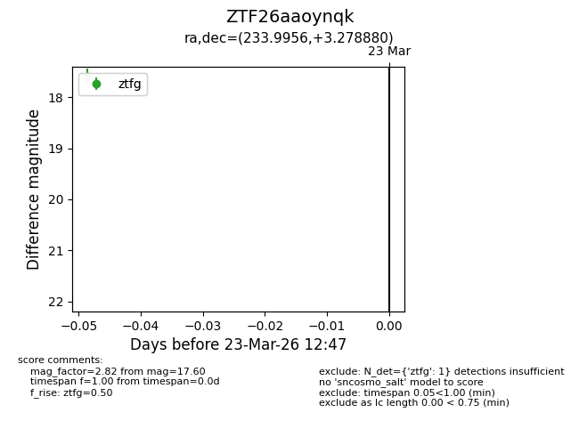
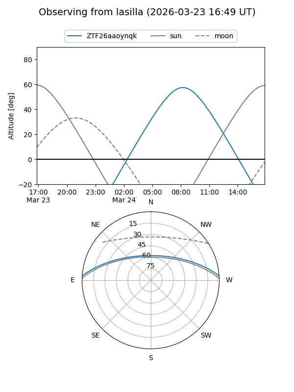
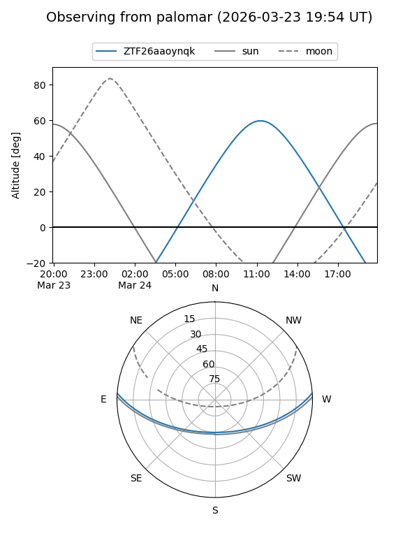

ZTF26aaoynqk
Target ZTF26aaoynqk at 2026-03-23 12:49
Aliases and brokers:
FINK: link
Lasair: link
ALeRCE: link
alt names
ZTF26aaoynqk (ztf,fink_ztf)
Coordinates:
equatorial (ra, dec) = 233.9956,+3.27888
equatorial (HMS+DMS) = 15:35:58.94,+03:16:43.97
galactic (l, b) = (8.9652,+44.04929)
Flags:
Photometry:
last ztfg=17.60
1 ztfg detections
Lightcurve

Visibility


Additional plots